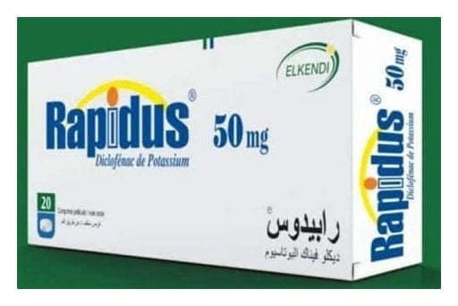

Rapidus 50 mg Film Kaplı Tablet, 20 Adet

Ne için kullanılır
KT · Bölüm 1Her kaplı tablet 50 mg diklofenak potasyum içerir.
RAPİDUS, 20 adet kaplı tablet içeren blister ambalajda takdim edilmektedir.
RAPİDUS, ağrı ve iltihabın tedavisinde kullanılan “nonsteroidal antiinflamatuvar ilaçlar (NSAİİ’ler)” adı verilen bir ilaç sınıfına aittir.
RAPİDUS, aşağıdaki durumların kısa süreli tedavisinde kullanılabilir: Kireçlenme (osteoartrit), eklemlerde ağrı ve şekil bozukluğu (romatoid artrit) ve sırt, boyun ve göğüs kafesi eklemlerinde sertleşme ile seyreden ağrılı ilerleyici romatizma (ankilozan spondilit) belirti ve bulgularının tedavisi ile akut guta bağlı eklem iltihabı (akut gut artrit), akut kas-iskelet sistemi ağrıları, ameliyattan sonraki ağrı (postoperatif ağrı) ve ağrılı adet görme (dismenore) tedavisinde endikedir.
RAPİDUS’un etki mekanizması ya da size neden bu ilacın reçete edildiği ile ilgili herhangi bir sorunuz varsa doktorunuza sorunuz.